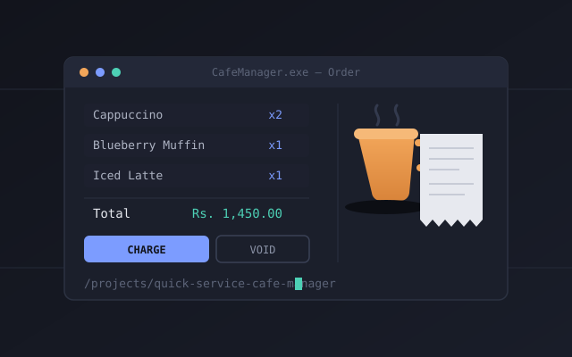
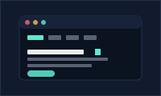

AgriConnect – Farm-to-Market Digital Platform
Web-based platform bridging farmers and buyers, supporting produce listing, order management, and communication to improve supply chain transparency and farmer profitability.
A selection of coursework and personal builds.
Web-based platform bridging farmers and buyers, supporting produce listing, order management, and communication to improve supply chain transparency and farmer profitability.
Smart transportation platform connecting passengers, drivers, and transport authorities — real-time tracking, digital ticketing, and ML-powered demand forecasting.

/projects/quick-service-cafe-managerDesktop application designed to manage café operations, including order processing, menu management, billing, and reporting.

/projects/portfolio-siteA fully responsive personal portfolio built from scratch with semantic HTML, custom CSS (no framework), and vanilla JavaScript — including a typewriter hero effect and an animated skills section.